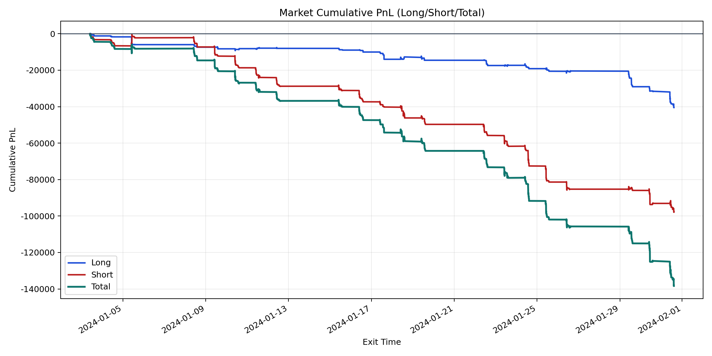
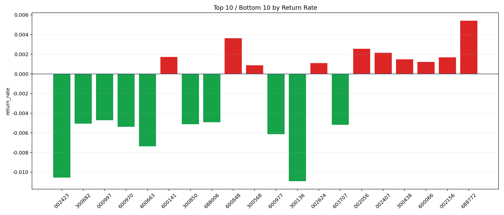

| repo_root | /home/haoranyou/data/output/dynamic_AUM_TAKER_index500 |
|---|---|
| period_months | 1 |
| period_label | 2024-01-03_to_2024-01-31 |
| start_time | 2024-01-03 09:51:27 |
| end_time | 2024-01-31 14:35:57 |
| n_trades | 4692 |
| n_symbols | 115 |
| total_pnl | -138369.32415000052 |
| long_total_pnl | -40498.11604999955 |
| short_total_pnl | -97871.20810000095 |
| total_entry_notional | 82748930.99999999 |
| long_entry_notional | 23066818.0 |
| short_entry_notional | 59682113.0 |
| total_return_rate | -0.001672158449394356 |
| long_return_rate | -0.0017556871541622929 |
| short_return_rate | -0.0016398750510056665 |
| top_symbols_by_return | ["688772", "600848", "002056", "002407", "600141", "002156", "300438", "600066", "002624", "300568"] |
| bottom_symbols_by_return | ["300136", "002423", "600663", "600977", "600970", "603707", "300850", "300682", "688006", "000997"] |

